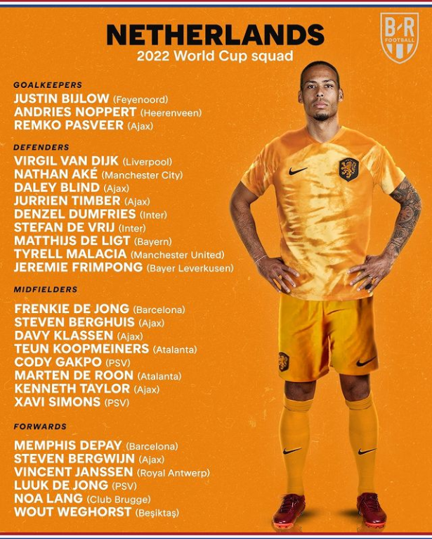
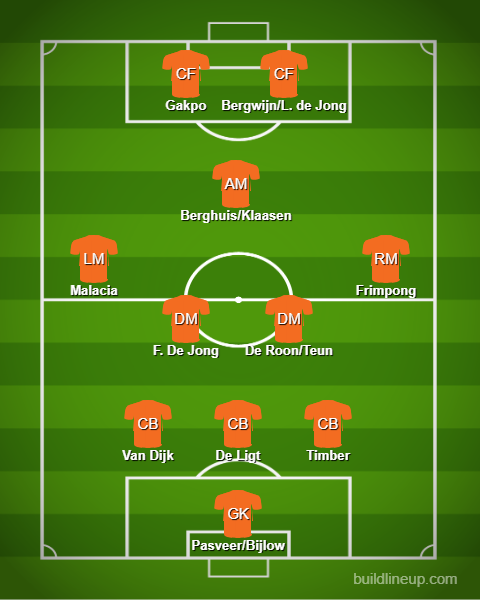

Squad Reaction - Netherlands

Alright, I am liking the look of this squad. This is the first World Cup for the likes of Van Dijk and Pasveer(Take a bow. Being the first choice for Ajax at 39). Van Gaal has really made a turnaround after that spell with Manchester United. The system is likely to be a 3-back system which has worked out well for them. In goal, Pasveer could be starting in goal but Bijlow is OTW as well so hoping he could have a game or so as well. At the back, you can’t look past De Ligt, Van Dijk and Timber. The options are Ake and De Vrij. On the wings maybe Malacia and Frimpong could be trusted. If not Malacia, Blind could be present as well. In midfield, it is likely to be a 3 with a CAM. Frenkie De Jong will mostly start since he has been consistent for FC Barcelona. Along with him maybe De Roon or Koopmeiners can be expected. In CAM, I’d rather have Berghuis or Klaasen. Maybe the likes of Xavi Simons could have a start. Up front is usually 2 strikers. One of them has got to be Cody Gakpo after the season he’s had in PSV. Alongside him, the options are Bergwijn, L. De Jong or even Weghorst.
The lineup:
